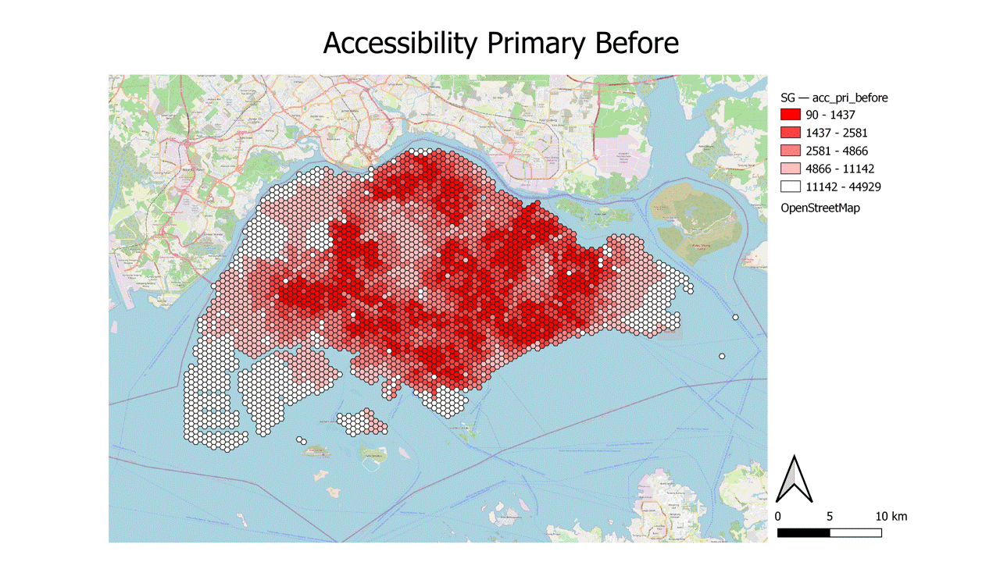
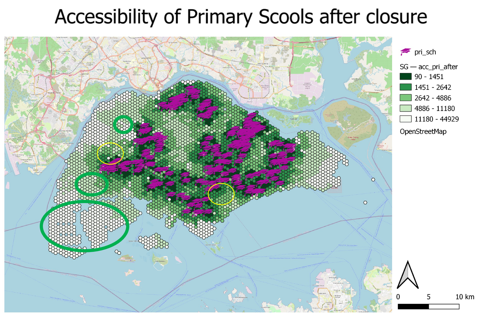
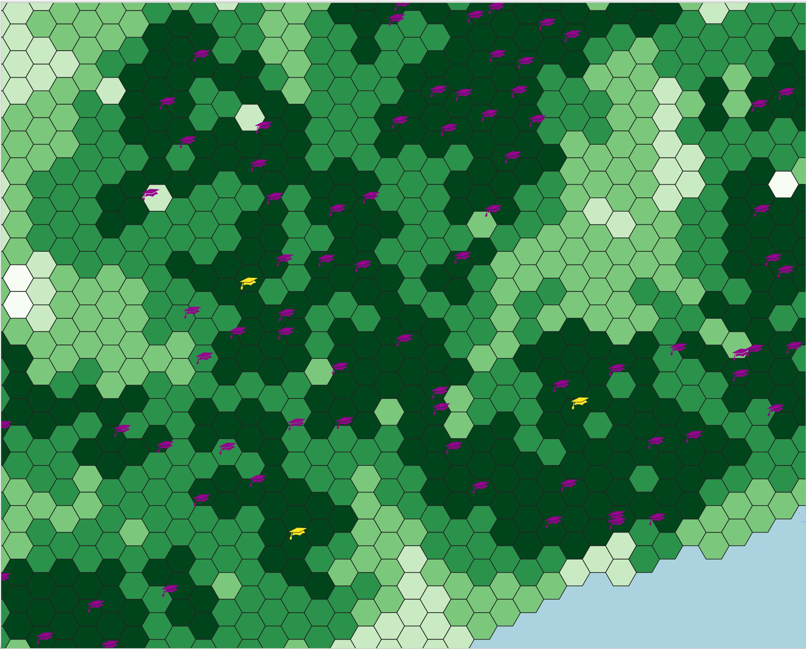
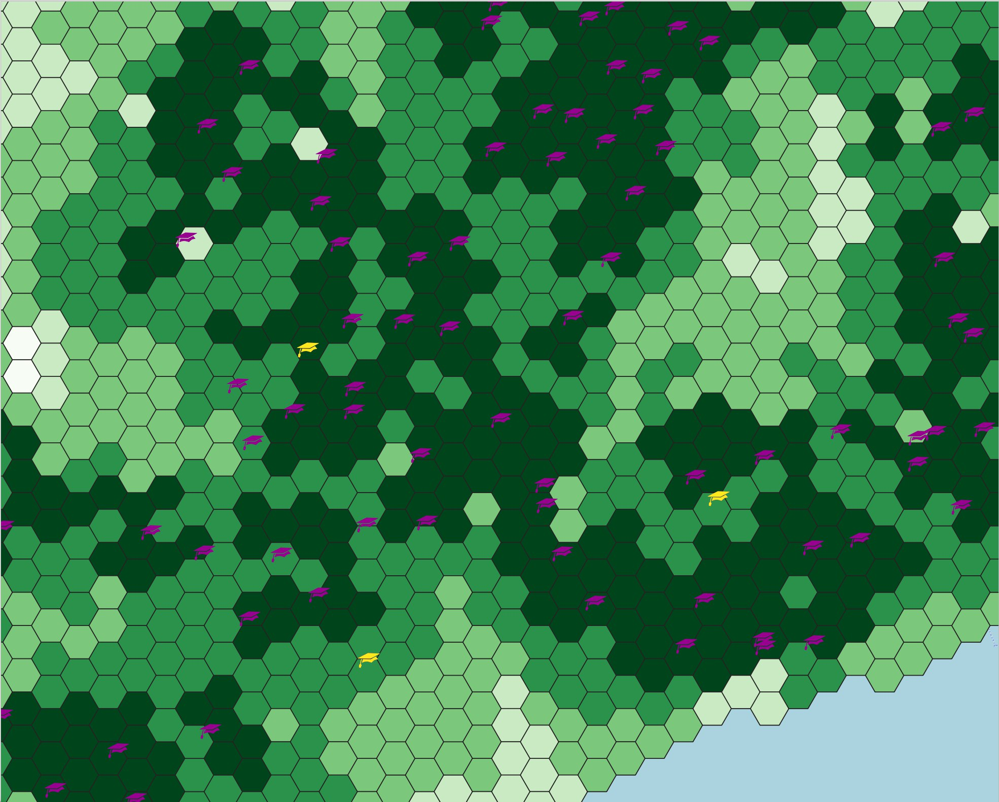

Shortest distance:
At a glace along with the shortest path tool we can analyse that the closure of these 4 schools are merged into the schools nearest to the them which we will analyse the equity of access later on.
Note that the distance between Pioneer Primary School and Juying Primary School is only around 2.2km. The distance between Farreer Park Primary school and Stamford Primary School is only around 1.95km.
It’s generally less than 3km between the close and the school that it’s being merged into.
Buffer:
From the map, we have a buffer zone with radius of 1km around the school that will be closed as we assume that it is the service area of the primary school. For the close down schools, we can analyse that these 4 schools will potentially impact 1770 residential buildings as shown in the map. With assumption of 10 units per level across 12 levels with 1 in 2 household having a child. In total, there will be
https://tablebuilder.singstat.gov.sg/table/TS/M810651
Buffer:

The gif above shows the change of accessibility before and after the closure of the 4 primary schools. Upon further analysis, we notice that that the southern subzone has turned to a lighter shade which indicates that residents of that area would have to travel further assuming they would commute to the nearest school. Besides this, let us compare further between the before and after.  The map above shows the accessibility of schools in Singapore currently, before the closure. The denser the color (dark green), will indicate the shorter the travel distance between the points in Singapore to their nearest Primary Schools. The map shows that the majority of Singapore Primary Schools are highly accessible. There are some areas that are completely white/ inaccessible such as those circle in green namely the North-Western planning area of Lim Chu Kang, Western planning areas of Pioneer and Tuas. However, they are inconsequential as they are not residential but rather industrial areas thus it explains the inaccessibility (we will go into more detailed on the residential population in the later section section later).
The map above shows the accessibility of schools in Singapore currently, before the closure. The denser the color (dark green), will indicate the shorter the travel distance between the points in Singapore to their nearest Primary Schools. The map shows that the majority of Singapore Primary Schools are highly accessible. There are some areas that are completely white/ inaccessible such as those circle in green namely the North-Western planning area of Lim Chu Kang, Western planning areas of Pioneer and Tuas. However, they are inconsequential as they are not residential but rather industrial areas thus it explains the inaccessibility (we will go into more detailed on the residential population in the later section section later).
Notice that there are 4 yellow icons for the closed school, we will monitor the difference especially those in the yellow circle to see how the closure of these school affects the equity of access.  After closure of the 4 schools, within the yellow circle towards the west, the closure of Pioneer Primary School have cause the color density to decreased suggesting that the points in Singapore and the residents in western planning area such as Jurong West. They will have to travel further to a primary school which hence decreases the accessibility as they will have to travel a longer distance to school. Similarly, for the yellow circle towards the south, the closure of Stamford Primary School have caused the color density to decrease and decreases their accessibility too these affect planning area like Rochor.


Before school closuressssssszz
Al, compared to Guangyang Primary School and Eunos Primary School, we notice that the
The map above shows impact of closures or mergers of education institutions on equity of access. As we.
The lighter the color (dark, the shorter the travel distance between the points in Singapore to their nearest Primary Schools.
impact of closures or mergers of education institutions on equity of access. As we
The map above shows the areas of Singapore which will be by the school
Service area using Vornoi:

To further compliment our previous analysis with the Choropleth Map (shortest distance), we have used Voronoi polygons to identify difference between the flying distance to validate our Choropleth map analysis of the number of residential building serviced before and after the closure of the primary schools. We will now look into each of them shortly.

Before the 4 schools close down, we have identified 4 areas that will potentially changed due to the closure as that the voronoi shape cause the color density to be lighten.

After the closure the 4 schools, we can delineate that the shape of the voronoi shape have changed causing the color to tone down. One example is towards the south of Singapore, Stamford Primary School have been closed down which explains the shift in the voronoi being lighter. Causing the voronoi that serve both Cantonment Primary School and Farrer park Primary School density to be changed.
This analysis aligns with the insights we gained from the choropleth map whereby the hexagon for Stamford Primary School the south have tone down in the density XX the desnity of …. changed